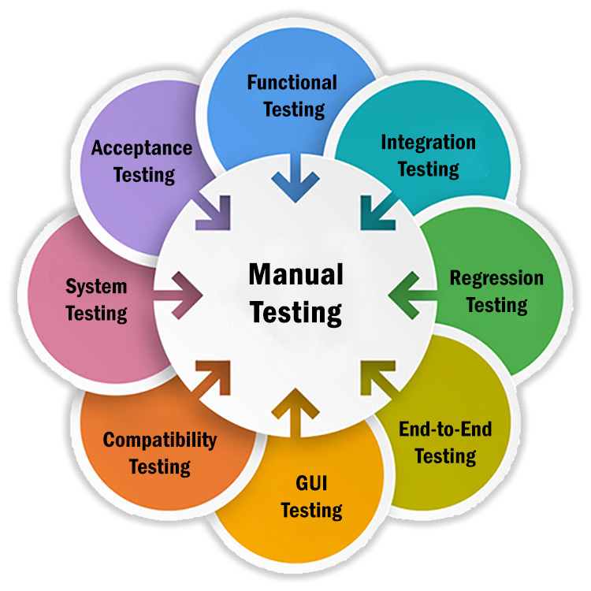
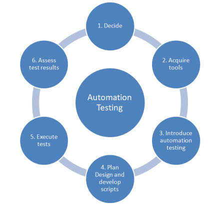

Manual Testing
I have started my carreer back in 2015 where I needed to do Manual Testing. There I have learned and worked with the testing terms and terminology........
Automation Testing
After working for couple of years, I felt curious for automation testing. Started using Postman, Rest-Assured for API automation and Selenium for Web-Automation.........